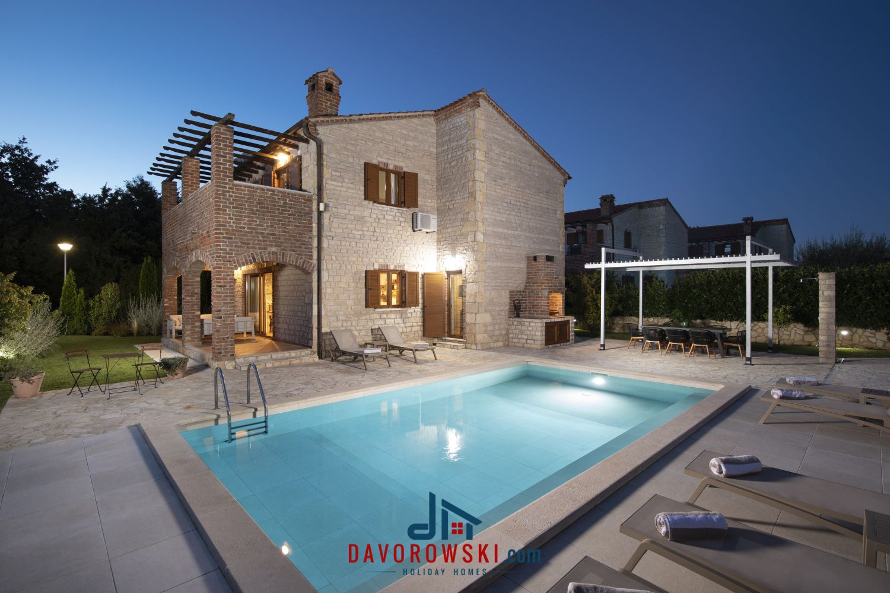
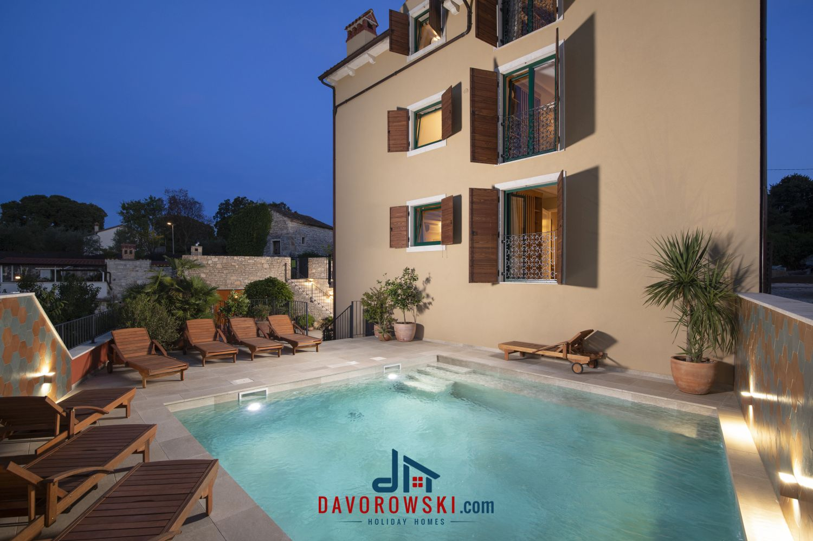

Two extraordinary villas. One unforgettable peninsula.
The Destination
Istria is one of Europe's finest food regions — home to the world's most prized truffles, award-winning wines, and a density of Michelin-starred restaurants that rivals much larger destinations.
Few places in Europe layer Roman, Venetian, Byzantine and Habsburg heritage so effortlessly — ancient amphitheatres, hilltop medieval towns and Renaissance piazzas are all within an easy drive.
Istria's 445 km coastline offers some of the Adriatic's clearest water — and just inland, dense oak and pine forests, cycling trails and nature parks provide a completely different escape.
Istria offers everything the Croatian coast is known for — sun, sea, excellent food — without the crowds. It's the rare destination that feels genuinely local even in peak summer.
Our Collection

A grand family retreat in the Paradise Villas resort — four bedrooms, private heated pool, 750 m² of Mediterranean garden, and Pula’s Roman ruins just 15 km away.

A brand-new luxury sanctuary for large groups — 7 en-suite bedrooms, private spa with sauna & jacuzzi, game room with PS5, heated pool, and medieval Bale just steps away.